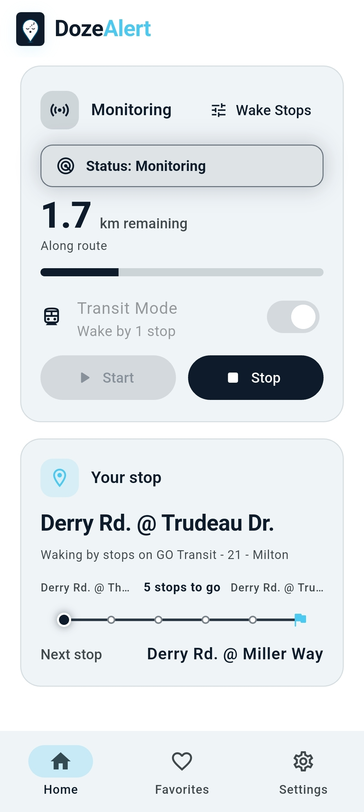
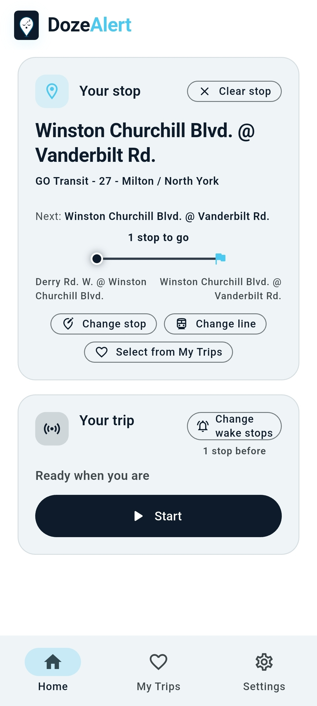
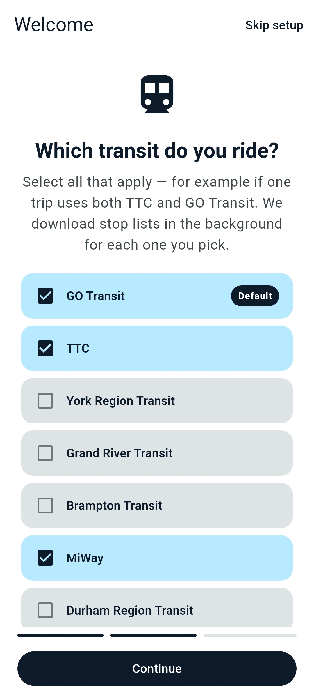
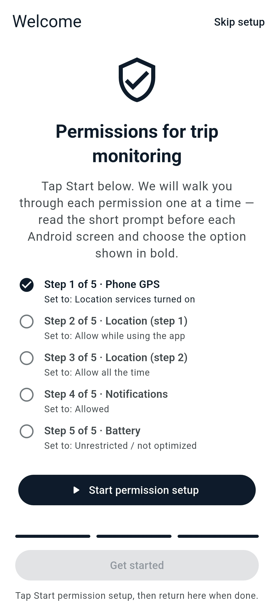
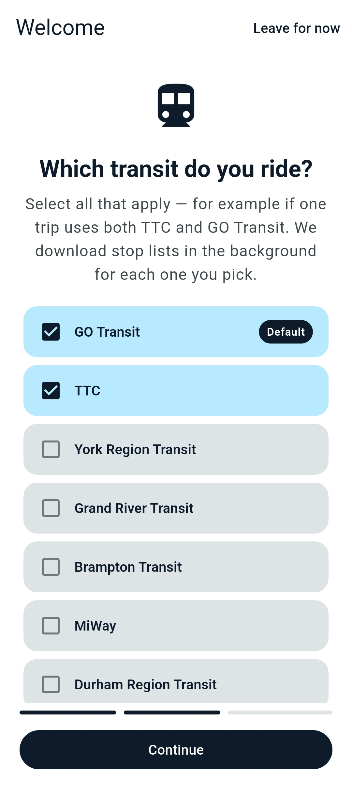
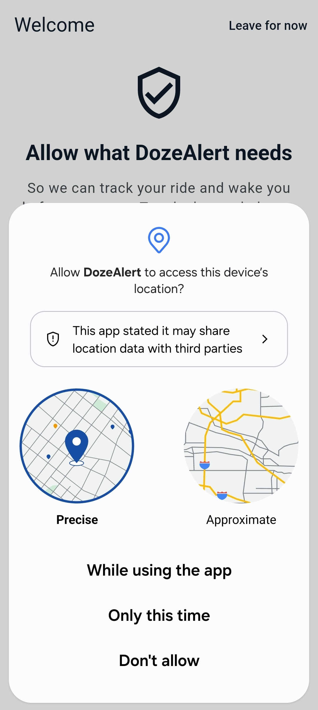
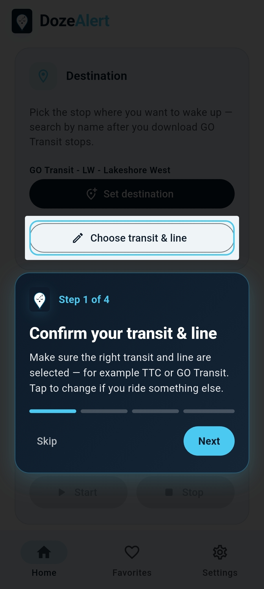
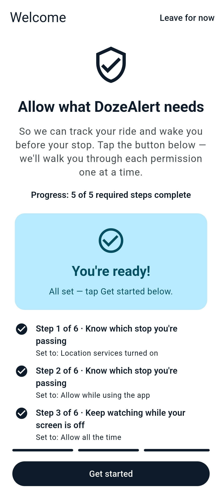
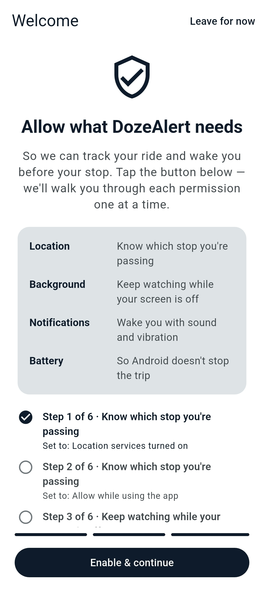
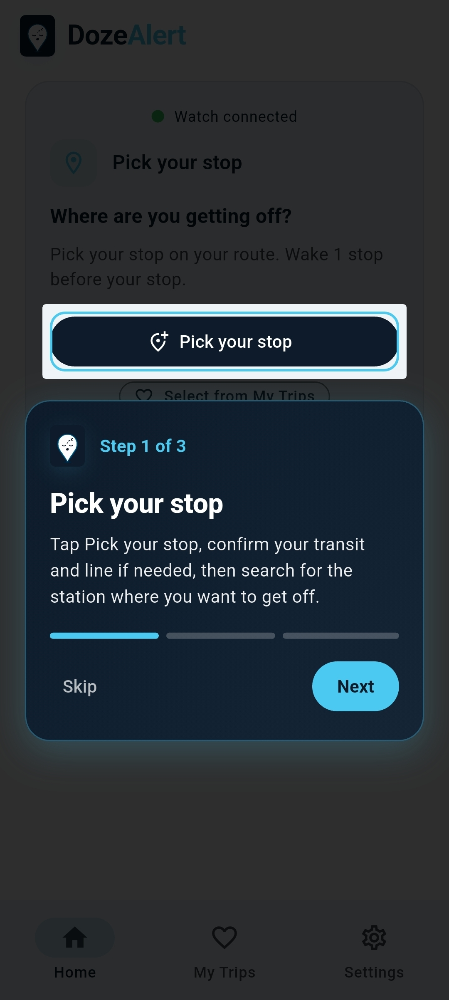

Sleep peacefully. Arrive confidently.
DozeAlert is built for commuters who want to rest without missing their stop. Set a destination, start monitoring, and get a reliable wake-up before you arrive — on GO Transit, TTC, and other agencies with offline GTFS data.
From first launch to your daily routine, DozeAlert keeps the important things upfront: where you’re going, how far you have left, and when to wake up.

DozeAlert monitors your trip in the background and sounds an alarm when you are approaching your destination — on a train, bus, or any ride where GPS works.
Pick a Transit stop from your line, search the map, or choose a saved favorite. Some Transit data is set up automatically during first-time onboarding.

Set your stop, choose a wake radius or transit stop count, and tap Start when you are ready. The monitoring card shows status, speed, and distance at a glance.

Search and filter stops on GO Transit’s Lakeshore West line (or browse all routes). GTFS data powers accurate stop lists for offline stop search and Transit Mode.
Once monitoring starts, DozeAlert tracks distance remaining and keeps a persistent notification so Android does not suspend your trip in the background.

Watch kilometers remaining update as you travel toward Bronte GO. When you are near your line, Transit Mode can switch to stop-by-stop progress and wake you one stop before your destination.
Stations you use often stay one tap away. Recent destinations appear automatically so you can restart a commute without re-entering details.

Save Home, Union Station, Pearson Airport, and more. Tap any favorite to set it as your destination and start monitoring right away.
Transit Mode wakes you by stops remaining, not just straight-line distance. Download agency GTFS feeds for offline stop search across Ontario and beyond.

Enable stop-based wake-ups while you are on a route. Choose to alert at your destination or one or two stops before. When you are not near a line, DozeAlert falls back to your wake radius.

Download GO Transit, TTC, and other Ontario feeds with progress shown in the app. Large feeds load in the background without freezing the UI.

Choose country, region, agency, and default line under Settings. Defaults to GO Transit and Lakeshore West for GTA commuters; change anytime for other systems.
Theme, wake radius, alarm sound, battery guidance, and transit preferences live in one place. No account, no ads, no data sale.

Adjust appearance, transit data, location accuracy, and alarm volume from a simple hub. First-time setup walks through permissions with clear guidance.

Share the app, read the privacy policy, or reach us at support@dozealert.app. Trip data stays on your device.
Download DozeAlert for Android and set your first destination in under a minute.
Download APKAlso search DozeAlert on Google Play when available in your region.